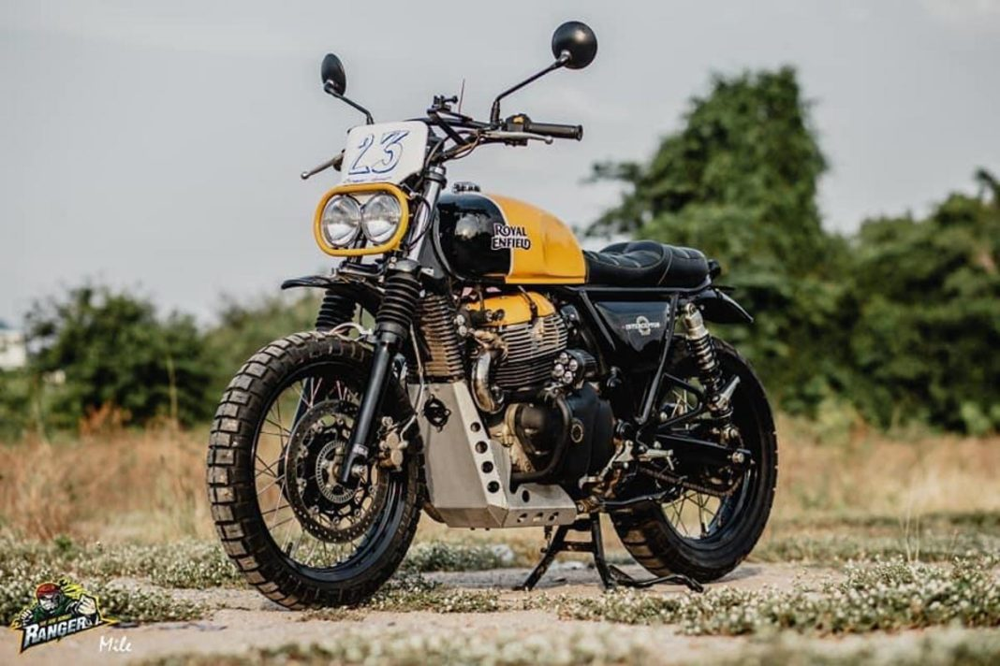

ROYAL ENFIELD INTERCEPTOR 650 M

The Regale has a custom headlamp, a new single-pod instrument cluster, a custom-built fuel tank with knee
pads, custom fuel filler cap, but the handlebar, levers, and switchgear have been left stock. The front is
highlight by a new fender with a longitudinally-mounted plate (however, the real one still resides in the
correct place).
Considering the Regale is a Bobber-style motorcycle, a lot of work has gone in the rear with the repositioning
of the suspension, new tail lamp, a new single seat instead of the long stock seat. The battery box and the
air filter have been repositioned as well. The indicators, both up front and back, are new.
LEARN MORE